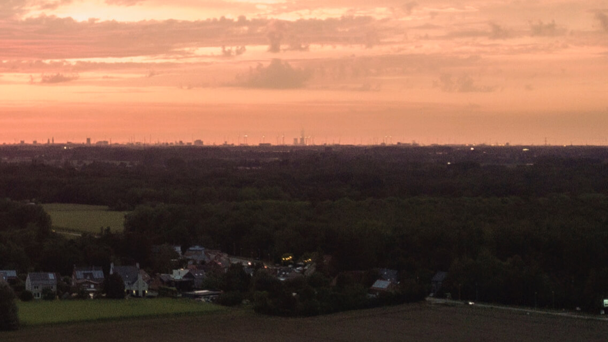

My hobby’s and interests are gaming and Photography
Gaming:
I have played a lot of games in my life but the games that have influenced my life the most and therefor hold a special place in my heart are CSGO, World Of Warcraft And Minecraft.
CSGO:
I will always remember CSGO because that is the game that Started my Friend Group The Tea House.
together with one of my best friends i played a game of csgo and we met 2 British guys one of those British Guys would become one of my best friends over the years and have an immense positive impact on my life, but after that csgo game we played more together. And after a while of playing together we started to add more people to our group The tea House began to grow and till this day everyone in The tea house will always have a special place in my heart and I would do anything for them. And that is why CSGO will always have a special place in my heart.
World Of warcraft:
WoW Will always have a special place in my heart Because it thought me to never Give up and that the more time you spend on something the better it will be. I never had something that actually showed me that until recent times and that was WoW.
Minecraft:
Minecraft is one of those game that u can just launch and Chill. Minecraft has helped me through Some Stressful times. It is the perfect game to help you relax in a stressful period and therefor it has a place in my heart

I really think this photo is a very nice photo because it is very gray but still retains beautiful colors.

just like the photo before it is an evening photo where it is gray but still super colorful.
 photo taken in mid-air using a drone.

nice picture of the clouds over the garden.

photo taken on the highways.

photo taken on the highways.

this photo is beautiful because the sun is hidden behind the clouds but there is still hope that it will emerge.

this photo where it seems that the cloud is an island above the houses is very inspirational to me.